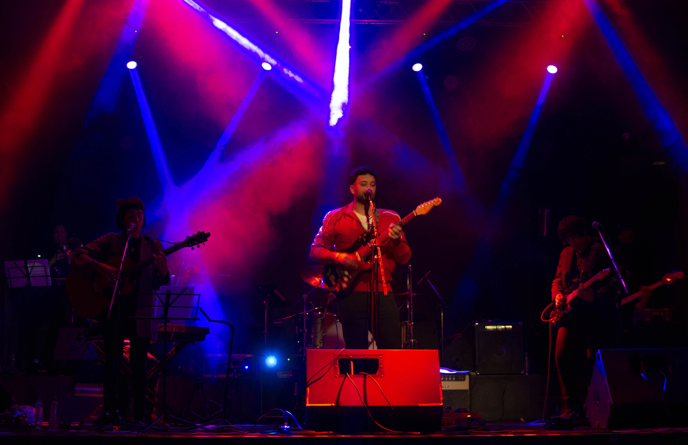

AGUSTIN BOASSO Es un musico compositor de la ciudad de Cordoba, Argentina.
Incia su carrera en el año 2019 con el lanzamiento de su primer EP "AGUSTIN BOASSO: Vol. I". Cuatro canciones presentadas en formato de duracion extendida cuya totalidad no supera los 10 minutos:
Humo.
Solo se que es hoy.
Khorintia.
Victorniox.
Este disco fue producido en Un Mañana Estudio a cargo de Facundo Verón y Agustin Boasso.
El mastering y la mezcla a cargo de Germán Rechitelli y el artowork y piezas graficas gracias a Federico Kenis.
En este disco el autor intenta plasmar en canciones momentos de la cotideanidad desde una perspectiva mas sensible y emocional, usando esta herramienta como un disparador que mejora el dia a dia.
Musicos que participaron en esta entrega:
El material cuenta con su version fisica de cortisimo alcance y su stream en plataformas.
PODES ESCUCHARLO HACIENDO CLICK AQUI.
En el año 2020 su presencia en el circuito se ve interrumpida por la situacion de emergencia sanitaria frente al COVID-19, postergando sus presentaciones y trabajos hasta el año siguiente. El año 2021 sera de gran movimiento para el artista.
El 23 de abril del 2021 sale en stream el corte GRITO, una cancion de poco mas de 3 minutos descripta por su autor como "PSICHOMECHANICHALROCK". Una composicion in the box que nos lleva de paseo por un ambiente industrial, cargado de maquinas y ciberpunk, comandado por el groove de la guitarra electrica.
Queda muy en claro que esta cancion parte desde el pensamiento compositivo de la guitarra aplicado a la cosmovision del momento: el teletrabajo y la colaboracion en red, Las distancias y el aggiornamiento de las herramientas tecnologicas dieron como resultado un producto que tuvo pertenencia dentro de este movimiento de revolucion virtual.
Una produccion a cargo de Franco Cornacchione, grabado en Santa Rita estudio;
Artowt y piezas graficas: Federico Kenis;
Fotos promocionales: Hermit Holmes;
Distribucion a cargo de Franco Sorgio.
Podes escuchar GRITO desde ACA!
Domingo 25 de abril realiza su segunda presentacion del año en CHILL STREET FOOD acompañado de LES INEFABLES DE LA OCASION. Un dream team que reune talentos humanos increibles con un power de otro mundo, resolviendose en musica caotica de interpretacion prolija y un claro amalgamiento que denota el profesionalismo de los integrantes frente a la ejecucion de su rol e instrumento.
Les inefables de la ocasion en ese momento:
Pueden encontrar un breve resumen del registro fotográfico de Hermit Holmes en este post!
El 15 de semptiembre de 2021 presenta su primer video GRITO, esta version pertence al primer capitulo de una serie de videos denominada PATIO SESSION. Estos videos fueron captados por el ojo de Matias Luna y Hermit Holmes en el patio de la casa del autor.
La nave del audio comandada por NTP ESTUDIO y sus capitanes Lauta Dellavecchia y Eduardo Conrad , que no solo grabaron y asisteron el momento sino que tambien se encargaron de la edicion y trabajo posterior.
Esta version de GRITO pone en ejecucion organica una composicion puramente machine. Muestra y expone como suena la cancion en vivo con el power y la frescura de la interpretacion de Les inefables de la ocasion.
Producido por Florencia Boasso y Agustin Boasso.
Podes ver el video desde AQUI!
Noviembre del mismo año es el mes donde KH[A]RÓN hace su aparicion por primera vez. El doceavo dia del mes las plataformas liberan esta produccion a cargo de Santiago Llorente grabada en vivo en NTP ESTUDIO junto a Les inefables de la ocasión.
Tiene de invitado al mismo productor en guitarras y voces.
Esta cancion es considerada por su autor como la pieza mas humana lanzada hasta el momento. Llena de humildad y una exposion emocional muy importante al momento de enfrentar el crecimiento y los cambios que nos propone la naturaleza y evolucion del ser humano.
Este release fue totalmente producido en NTP ESTUDIO. Tanto como su mezcla y su master estuvieron a cargo de Lautaro Dellavecchia y la distribucion a cargo de Franco Sorgio.
Arte de tapa, piezas digitales: Federico Kenis
Fotografia de prensa: Hermit Holmes
Podes escuchar KHARON desde ACA!
Para cerrar el año, mas precisamente el 8 de diciembre de 2021, el autor presenta PATIO SESSION:CAPITULO DOS- HUMO, siendo esta la continuacion del primer capitulo expuesto en septiembre. En este episodio Agustin junto a Les inefables decide sacar a la luz una version en vivo de una cancion de su EP Vol. I para poder mostrar la ejecucion de la banda frente a este trabajo.
Podes ver el video desde ACA!

En el mes de marzo de 2022 se presenta PATIO SESSION junto a LES INEFABLES DE LA OCASIÓN como audio en todas las plaraformas de stream, dando incapie a un año lleno de actividades.
El disco consta de cinco canciones grabadas en el patio de la casa del autor:
Humo.
Grito- Rock version.
Solo se que es hoy.
Por No
Victorinox.
Este disco se presenta como una propuesta de rock fresco para poder presentar los temas del Vol.I en formato banda en vivo.
El equipo es extactamente el mismo que partcipo en los videos, con un trabajo diferente de mastering y mezcla de NTP ESTUDIO.
La distribucion a cargo de Franco Sorgio y el artowork y piezas digitales de la mano de Federico Kenis. Fotografia de distribución: Hermit Holmes.
Podes esuchar el disco ACA!
El 28 de abril del mismo año, AGUSTIN BOASSO, realiza una presentacion en el conocido Club Paraguaay con una formacion de nueve personas en escena.
Hace la inclusion de una fila de vientos comandada por Manuel Farias Busso precedida por Cintia Oviedo y Nicolas Ocampo.
Aparce por primera vez en escena junto a Les inefables Luli Oli en guitarras y coros como asi tambien Federico Kenis en primera guitarra.
Esta formación se mantendria a lo largo del año en los shows posteriores y futuros proyectos.
Fotos de la presentacion ACA!
Se podria decir que AGUSTIN BOASSO es un artista emergente en movimiento. Partiendo del rock como lite motiv pero incluyendo y perteneciendo a otros estilos y géneros que han formado parte de su carrera como guitarrista, cantante, musico y compositor.
Estaremos atentos a que novedades trae este fin de año y que movimientos hará para seguir perteneciendo a la escena local.